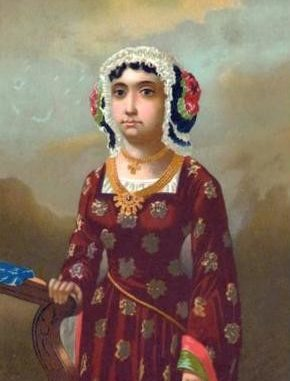

Chương 6
Từ Băng Đảo và nước Anh trở về, Colombo đã định cư tại Lisbon (xứ Bồ Đào Nha). Nhiều người Genova sống tại đó, trong đó có những đại lý cho những chủ tàu của ông ta, spinola và Di Negro. Trong kho lưu trữ quốc gia Genova có một lời khai ngày 25 tháng 8-1479 trước tòa án Genova của Cristoforo Colombo với tư cách là một đại lý do Paolo Di Negro thuê. Lời khai này liên quan đến một vụ án dân sự về thỏa thuận tháng 7 năm trước về chuyên chở đường, bằng tàu biển từ Madera. Cuộc buôn bán xấu đi vì Di Negro đã không gửi cho Colombo tiền chi phí thuê tàu và tiền hàng hóa.
Những chi tiết của vụ kiện này không làm chúng ta quan tâm. Tuy nhiên chúng ta quan tâm đến những lời nói rằng nhân chứng ‘‘Colombus Cristophorus’’ (1) khoảng hai mươi bảy tuổi và là một công dân thành Genova sống ở Lisbon. Lời nói rằng ông phải trở về Lisbon ‘‘sáng ngày hôm sau’’ cũng đáng lưu ý.
Colombo đáng lẽ đã có thể khai ở Lisbon. Thay vì làm như vậy, ông đã đến Genova, chắc chắn ông đã thăm bố mẹ và anh em ở Genova hoặc Savona. Một số người đã gợi ý rằng Colombo đã hình thành trong tâm trí một cuộc phiêu lưu nào đó ở Đại Tây Dương và đã lợi dụng chuyến đi này để nói về những ý nghĩ đó với những chủ tàu của ông ta, hay thậm chí với các quan chức của nước Cộng Hòa. Giả thuyết đó không thể loại trừ, ngay cả trong trường họp không có tài liệu để hổ trợ.
Lẽ ra việc triển khai kế hoạch lớn đã có thể hoàn thành năm 1479. Tuy nhiên có thể Colombo đã nói với những chủ tàu của ông và những nhân viên ở Genova một cách chung chung về những cuộc phát kiến mới ở Đại Tây Dương khả dĩ có thể có và tầm quan trọng của những đảo đã biết (như Madera). Dù sao chăng nữa, ông đã không tìm được một thính giả chăm chú lắng nghe ông. Hành động dũng cảm của Vivaldis đã là một thảm họa, hành động dũng cảm của Lanzarotto Marocello chỉ làm lợi cho Tây Ban Nha. Vẫn còn một số người Genova mạnh dạn, và Colombo là một trong số họ. Những nước Cộng Hòa, nhà băng San Giorgio, những người chủ tàu, và những nhà buôn cảm thấy mặc dù Genova rất giàu có, đó là một quốc gia quá nhỏ bé để mở rộng mãi vào Đại Tây Dương.
Giả thiết Colombo đã phát hiện ra châu Mỹ dưới lá cờ Genova, lá cờ ấy sẽ không phất phới bay lâu dài trên những vùng đất mới. Chẳng bao lâu lá cờ ấy sẽ được thay bằng cờ Tây Ban Nha, Pháp, Bồ Đào Nha, hoặc Anh. Điều đó cũng là điều đã xảy ra với đảo Lanzarote và những đảo khác ở Đại Tây Dương. Như thế, dù những thủy thủ sinh ra và lớn lên ở Genova mạnh dạn bằng cách này hoặc cách khác, những cố gắng của họ đã kết thúc làm lợi cho những người khác, và như vậy, để cho họ xúc tiến những công việc của họ để phục vụ những quốc gia khác, chỉ là một điều hợp logic. Nếu Colombo nói chuyện với bất cứ người nào về Đại Tây Dương, về những kế hoạch của ông trên Đại Tây Dương cho đến lúc đó, chắc chắn ông sẽ nhận được câu trả lời theo hướng đó.
Ngày 26 tháng 8 năm 1479, Colombo đã rời Genova không bao giờ trở lại. Ông đã ra đi với một niềm tin dù cay đắng nhưng có tính chất thực tế, vì những người Genova là những người thực tế cay đắng. Ông tin rằng ông phải đảm nhận những chuyến đi trên Đại Tây Dương, nếu ông phải tìm những vùng đất mới ở đấy, ông sẽ phải tìm sự hỗ trợ và việc tổ chức cho công việc của ông từ những quốc gia Đại Tây Dương, từ những quốc gia đã có quyền lực và đã thiết lập những lợi ích ở Đại Tây Dương và rất có thể đã cảm thấy nhu cầu bành trướng đó.
 .
.
Felipa Moniz Perestrello
Cuối mùa xuân, hoặc đầu mùa thu 1479, Colombo kết hôn với Felipa Moniz Perestrello. Theo Don Ferdinand và Las Casas, ông đã yêu trong nhà thờ như nhiều người Ý, người Tây Ban Nha và người Bồ Đào Nha thời đó. Chỉ có trong ánh sáng lờ mờ của nhà thờ người ta mới có thể trố mắt nhìn một người con gái xinh đẹp mà không gây ra một chuyện bê bối nào. Colombo đã kết hôn vì tình yêu, nhưng trong khi Colombo thực sự yêu Felipa, chúng ta không thể loại bỏ một điều mà Colombo đã kết hôn với Felipa vì những lý do khác nữa, trong đó có hai lý do chính. Thứ nhất Felipa Moniz Perestrello là một người quý tộc, có lẽ đã bị bần cùng hóa, nhưng là một người có dòng máu quý tộc đầy đủ cả về bên cha của nàng, dòng máu quý tộc Perestrello, lẫn bên mẹ nàng, vì gia đình Moniz là một trong những gia đình quý tộc cổ nhất ở Bồ Đào Nha. Suốt cả cuộc đời mình, Colombo đã tìm cách để đạt được địa vị quý tộc, hoặc được thừa nhận danh tước ông đã được ban. Địa vị quý tộc là yêu cầu thứ nhất - thậm chí trên cả phần thưởng tiền tài - cho một cuộc hành trình thành công trên biển. Gia đình của Felipa là quý tộc đã suy tàn, giống như trường hợp gia đình bố Colombo.
Lý do thứ hai của cuộc hôn nhân ngày nay dễ hiểu hơn. Theo Don Ferdinando và Las Casas, Bartolomeo Perestrello, bố của Felipa, là ‘‘một người đi biển lớn’’. Những nhà sử học coi đây là điều nói quá sự thật. Chắc chắn là lớn, nhưng không phải lớn như người ta tưởng tượng. Bartolomeo Perestrello, con trai của Filippo Pallastrelli từ Piacenza và Caterina Sforza, sinh ở Bồ Đào Nha vào đầu thế kỷ thứ XV. Họ đã đổi thành hình thức Bồ Đào Nha của Perestrello, và nhà vua đã khẳng định chúc quý tộc của họ. Vợ thứ hai hoặc thứ ba của Bartolomeo là Isabella Moniz, con gái một trong những gia đình rạng rỡ nhất thuộc quý tộc Bồ Đào Nha. Felipa đã sinh ra từ cuộc hôn phối ấy… Khi bà kết hôn với Colombo, cha bà đã chết khoảng hai mươi năm trước.
Bartolomeo Perestrello không phải là một nhà đi biển lớn, càng không phải là một nhà phát kiến. Tuy nhiên ông là thống sứ đảo Porto Santo. Nếu Hoàng tử Henry, một nhà tổ chức và một người phán đoán con người vĩ đại như vậy, đã ban thưởng cho Bartolomeo một hòn đảo quan trọng đối với việc khảo sát Đại Tây Dương, thì có nghĩa Bartolomeo là một con người có một tầm vóc nào đó, không những vì ông ta là dòng dõi quý tộc cấp cao Italia, mà còn vì sự hiểu biết của ông ta về biển cả. Sau khi Bartolomeo chết, chồng của một trong những người con gái khác của ông ta, rể tương lai của Colombo, Pedro Correa de Cunha được cử làm thống sứ Porto Santo. Không thể nghi ngờ là Colombo quan tâm đến việc duy trì quan hệ với Pedro Correa de Cunha.

.Như thế là có hai điều kết hợp với câu chuyện tình lãng mạn: quý tộc truyền thống và sự hiểu biết về Đại Tây Dương mà gia đình Felipa đã có. Colombo gặp Felipa Moniz Perestrello và cuộc hôn nhân tiếp theo của họ đã có tác động lớn đối với việc mở đầu cuộc phát kiến vĩ đại.
Con đường từ Lisbon đến Funchal (Phun-can), hoặc Machico (Ma-ki-cô)- những cảng của Madera ở thế kỷ thứ XV - đi vòng đảo Porto Santo ở chặng cuối cùng. Không những Colombo đã được biết rõ về sự tồn tại của đảo này mà đã viếng thăm đảo ấy trước khi lấy Felipa. Sau khi kết hôn, ông đã quen với Porto Santo. Porto Santo nằm cách Madera 27 dặm về phía Đông Bắc và chỉ rộng 16,4 dặm vuông. Porto Santo là một vệ tinh của Madera. Từ bất cứ điểm nào trên đảo,người ta đều có thể ngửi thấy mùi Đại Tây Dương, và trong những cơn giông bão nghe thấy sóng vỡ tung tóe trên bờ biển.
Chắc chắn Colombo đã đi Porto Santo sau khi kết hôn và có lẽ cùng với Felipa. Con trai của ông, Diego, có lẽ đã được sinh ở đó. Dù sao chăng nữa, Colombo đã sống ở đó và đã có thể tham khảo những bản đồ của bố vợ. Về việc này Don Ferdinando nói: ‘‘Mẹ vợ ông cho ông những bản viết và bản đồ chồng bà đã để lại. Những bản viết và bản đồ đó càng kích thích viên Đô đốc, thông báo cho ông về những chuyến đi mà người Bồ Đào Nha đã thực hiện đến Elmina và dọc theo bờ biển Ghinê’’.
Mặc dù Bartolomeo đã chết được nhiều năm, những bản đồ của ông đã nói tiếng nói của người sống. Không một nhà sử học nào nói những văn bản và bản đồ đó là gì, nhưng rõ ràng chúng là những bản đồ, portolanos (những cẩm nang về đi biển), những bài bình luận và những bản thảo truyền lại cho những thủy thủ bởi những nhà nghiên cứu vũ trụ và những nhà nghiên cứu địa dư thuộc Sagers, trong thời Henry, Người Đi Biển. Colombo đã lục lọi trong số những giấy tờ này, và đã tìm hiểu được vùng Đại Tây Dương, do bán đảo Iberia, quần đảo Azores và mũi Cape Verde bao quanh. Colombo đã hiểu về lý thuyết, điều mà ông ta bắt đầu hiểu dưới sự căng thẳng của việc đi thuyền buồm kéo dài và gian khổ ở phần này của Đại Dương, như ông đã thực hiện ở Địa Trung Hải, từ đông sang tây.
Colombo đã lục lọi không những trong những giấy tờ của bố vợ ông mà cả trong những tảng đá và cát, thăm dò mọi bí mật được giấu kín nhất của bãi biển và trung tâm của Porto Santo. Có phải tại đây Colombo đã nghĩ về kế hoạch lớn của ông lần đầu tiên hay không? Có phải tại đây ông đã mài dũa ý nghĩ ‘‘tới phương Đông bằng cách đi thuyền về hướng Tây hay không?’’ Không có tài liệu nào chúng mình điều đó, nhưng có lẽ đảo Porto Santo là nơi sinh ra ý nghĩ này của ông.
Porto Santo giống như một chiếc thuyền ở giữa Đại Dương, một loại thuyền nhẹ so với những tàu lớn hơn, một loại tiền đồn, đơn giản và trơ trụi ở phần thiên đường trần gian là Madera, với những bờ biển đầy cát ở phía Nam, thú vị và rộng rãi, và những bờ biển đầy đá ở phía Bắc, màu sẫm và liên tiếp bị những đợt sóng thường đầy giông tố đập vào. Đó là một hòn đảo đá phún thạch màu đen nhô ra phía tây nam, một vùng đất làm tổ của những con chim hải âu, một người lính gác bao vây bởi biển cả nổi sóng, ở đây Colombo đã sống với ảo ảnh Madera luôn luôn ở trong tâm trí ông. Một hòn đảo ma thuật, đối với ông Madera vừa là điểm cuối cùng của thế giới đã được biết, vừa là gọi ý về sự tồn tại của những vùng đất khác ở xa hơn về phía Tây. Những ý nghĩ của ông quay theo hướng đó khi ông được biết rằng một miếng gỗ được chạm trổ cẩn thận và một số cây sậy to hơn những cây sậy trên đảo đã dạt lên bờ biển phía Tây.
Tại đây ông đã đi lang thang từ vịnh nhỏ này đến vịnh nhỏ khác, chăm chú nhìn chân trời và cố giải mã những điều không biết, vì bây giờ ông tin chắc rằng ở đằng kia, ở quá kinh tuyến thuộc Madera gần đó, phải là đất liền, không phải là vực thẳm. Colombo mong đợi một chứng cớ nào đó về vùng đất ấy từ những đợt sóng đập vào mõm đá của Porto Santo. Ý nghĩ chi phối Colombo đã mang một hình thù cụ thể đầu tiên: phương Tây. Và như vậy ông bị ám ảnh không phải bởi mặt trời mọc mà bởi mặt trời lặn. Khi mặt trời đi xuống, Colombo hoặc ở Ponta da Calheta, Ponta da Canaveira, Ponta do Umal, hoặc trên những dốc của Pico Ana Ferreira, ngắm nhìn mặt trời đi xuống và nghĩ rằng tại Portofino và Quinto mặt trời đã lặn được hai giờ và đã là đêm, một người nào đó ở bên kia biển, đang nhìn cùng một mặt trời này - đối với ông đã lặn một nửa - đối với người đó mặt trời vẫn còn trên chân trời.
Cùng một vĩ tuyến với Lisbon và Algarve là quần đảo Azzorre. Có những đảo khác ở phía Tây trên cùng một vĩ tuyến như Porto và Marocco hay không? Có một Marocco khác, một châu Phi khác hay không? Có thể có một lục địa khác với cùng những cây kỳ lạ như những cây chỉ thấy ở đây, trên đảo Porto Santo, như cây dragoeiro (cây rồng) chẳng hạn, chỉ thấy ở quần đảo Madera và ở Canarie hay không? Những cây đó cũng mở ra hướng Tây. Và có thể có marmulano ở đó, cũng thấy ở trên đảo Madera, Porto Santo và Cape Verde cũng hướng về phía Tây hay không? Người ta thấy không có cây nào ở châu Phi, Colombo đã được nói cho biết như thế và điều đó được xác nhận cho bản thân ông trên những chuyến đi biển tới Ghinê.
Từ đó người ta khẳng định rằng gió và những dòng nước đã làm phong phú hệ thực vật trên đảo bằng những cây ở Mỹ. Thật vậy trên những bờ biển Porto Santo và Madera người ta có thể thu lượm những hạt giống từ West Indie, Mexico và Folorida. Trong viện bảo tàng trường thần học Funchal có một số mẫu về những hạt giống như thế, trong đó có một loại cây đậu cỡ lớn, cây Macuna entata mà trên đảo Porto Santo gọi là fava do mar (đậu biển), ngày nay gọi là đậu fava de Colon (đậu của Colombo).
Colombo có biết điều này hay không, sắc bén và nhạy cảm như ông đối với mọi mặt của thiên nhiên và mọi chi tiết của những dòng nước biển? Khó trả lời câu hỏi này, nhưng để cho rằng ông đã cảm thấy điều gì đó mà ngày nay khoa học đã xác minh. Đây là một mảng nhiều màu sắc khác nhau nữa trong kế hoạch lớn của ông.
Có một vùng đất khác ở phương Tây, từ đó chim đã mang đến những hạt giống của cây cối ngoài lại; một vùng đất có lẽ đáng yêu và say người như Madera. Vùng đất ấy có phải là một hòn đảo không? Tại sao không phải là một lục địa? Tại sao không phải là châu Á? Những thủy thủ ở Lisbon tin chắc rằng trái đất tròn. Và nếu trái đất tròn, tại sao không thể ba hoặc bốn giờ ánh nắng mặt trời tách Porto Santo khỏi cạnh phía đông châu Á, vì hai giờ đã tách Genova khỏi Porto Santo?
Chú thích:
(1) Họ và tên Colombo thường được viết theo các dạng chính tả khác nhau, ở đây chúng tôi cố ý giữ nguyên dạng chính tả của văn bản cổ.